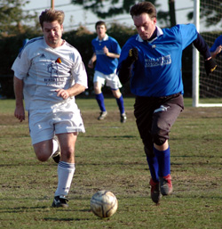

|
YC&AC, Sat 4th March. On a beautiful day at YCAC, with the Swiss feeling confident following their 2nd win in a row vs. over the Hibs., the Geckoes came to play. More changes to the Swiss lineup meant a lot of uncertainty but the team was hopeful that there was enough quality. For the Geckoes, in spite of being without their captain (who felt that the snow was more appealing than kicking some Swiss), they looked to have their normal squad out. The Geckoes are a solid team with a physical style of play that is compounded on the kids pitch at YCAC but it is something that everyone has to deal with these days.
1H was pretty even with the Geckoes looking a little stronger in midfield with more consistency in their passing but both teams were having problems getting past defenders on a very bumpy pitch. Most of the high balls out of the back were being picked up by the Geckoes center back who was towering over Dave P. and JP in midfield. Fortunately for the Swiss, the defense was holding up in spite of some makeshift sidebacks and Peter in goal was rarely called upon except for one deflection which nearly found the back of the net following a 25 meter shot. Going the other way, it wasn't until about 30 minutes in before the Swiss had a clear opportunity. Uchida was able to get a shot off with the goal beckoning after the keeper went down but a defender was able to clear it off the line. The whole 1H wasn't very pretty and not much quality going either way.
2H really didn't change much until about 15 minutes in. The Swiss were awarded a free kick about 25 meters out, in the center. James lined up with his left cannon only about 10 meters away from the ball. Dave tried to tap it to him except that the defenders reached the ball at the same time James did (lose some weight big man). The ball popped up in the air and fell to Karl who executed a half bicycle/over the head volley which went up into the sun and fell in over the blinded keeper. 1-0 to the Swiss. Little else one can say except that it was entirely undeserved but an extremely well executed flop of a free kick. Following that fluke goal, the intensity rose a bit but the quality never did. The game ended 1-0 with the Swiss a little lucky and the Geckoes, well, still the Geckoes.
Match reporter: Cap'n Kirk
|